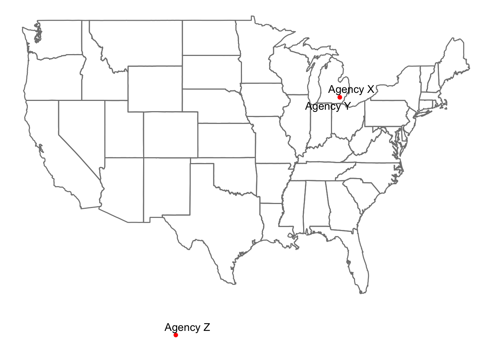

Geocoding Demo
1 Call Libraries
library(tidygeocoder) # geocoding
library(dplyr) # for %>% operator
library(readxl) # import Excel
library(ggplot2) # beautiful graphs
library(maps) # map data
library(ggrepel) # repelling labels
# library(ggmap) # don't use2 Get Data
simulated_address_data <- read_excel("simulated-address-data.xlsx")3 Concatenate Addresses
simulated_address_data$address <- paste(simulated_address_data$street,
", ",
simulated_address_data$city,
", ",
simulated_address_data$state)4 Geocode
ArcGIS geocoding has LOW success rate with this data
You will want to find a process with HIGH success rate
You could also try batchgeo -> KML -> Latitude/Longitude
mydata <- simulated_address_data %>%
tidygeocoder::geocode(address,
method = 'arcgis',
lat = latitude,
long = longitude)Passing 3 addresses to the ArcGIS single address geocoderQuery completed in: 0.5 seconds5 Maps
By design, these maps are zoomed out to show the errors in geocoding. You could adjust them to zoom in on the particular location of interest.
5.1 ggplot
ggplot(mydata,
aes(x = longitude,
y = latitude,
label = agency)) +
borders("state") +
geom_point(color = "red") +
geom_text_repel(max.overlaps = 100) +
theme_void()
5.2 leaflet
library(leaflet) # interactive maps
leaflet(mydata) %>%
addCircles(lng = ~longitude,
lat = ~latitude,
label = ~agency) %>%
addTiles() # map tiles